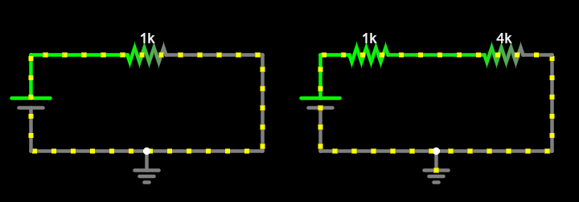
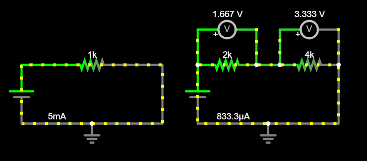

Adventure 1a: Equivalent resistance: Resistors in series¶
Goal¶
Understand equivalent resistance. Simulate a circuit with multiple resistors, connected in series. Then, build it on a breadboard.
Simulate circuit¶
Open Circuit Simulator and load the circuit from Adventure 0: Ohm’s Law. Here is an example of the finished circuit: Circuit - Ohm’s law.
Use your mouse to drag a selection box around your circuit, so you can select multiple components. Copy and paste your existing circuit once, so you have two independent (sub-)circuits side-by-side, each with its own voltage source and connection to ground.
In your copy, add a new resistor in series with the old one:
Insert one more resistor.
Connect it so it sits between VCC and the original resistor, or the original resistor and GND.
Double click it and set its resistance to \(4kΩ\).
Your circuit should look something like this:

Click RUN / Stop to start the simulation. Hover your mouse over each one of the two resistors, notice the same current flows through both of them. What is its value? How does it compare between the old and the new circuit?
Answer
It is smaller, \(I_{new} = 1mA\), while the current that flows through the original circuit is \(I_{old} = 5mA\).
If you would like some help with creating the circuit, see below.
Hint
Here is an example of the finished circuit: Circuit - Resistors in series.
Change the value of the second resistor. How does the current change depending on the value? What happens if you set the resistance to zero? What happens when you set it to a really big value, say \(100MΩ\)?
Tip
Double-click any wire and enable Show current so you can see the current that flows through the it as you change the resistance.
Continue changing the value of the second resistor. How does the voltage drop across each resistor change depending on the resistance?
Tip
Click Draw –> Outputs and Labels –> Add Voltmeter/Scope Probe, and add one voltmeter over each resistor. Add wires to each voltmeter so its ends connect to the ends of the resistor below it. This way each voltmeter will be measuring the voltage drop across its respective resistor.
Important
Double-click each voltmeter and set its “series resistance” to
0, i.e., infinite. This makes it an ideal voltmeter, which does not have any effect on the quantity it measures. We will talk more about this in the next adventure.Your circuit should look something like this:

Let’s name the two resistors and set them to \(R_1 = 2kΩ\), \(R_2 = 4kΩ\), so their voltage drops are \(V_1\), \(V_2\), respectively. What is the value of \(V_1\), \(V_2\), and what is the sum \(V_T = V_1 + V_2\)?
Set the value of \(R_2\) to \(8kΩ\). What happens to \(V_2\), \(V_1\), and their sum, \(V_T\)?
Answer
Before:
\[\begin{split} \begin{align*} R_1 = 2kΩ \qquad V_1 &= 1.667V \\ R_2 = 4kΩ \qquad V_2 &= 3.333V \\ V_T = V_1 + V_2 &= 5V \end{align*} \end{split}\]After:
\[\begin{split} \begin{align*} R_1 = 2kΩ \qquad V_1 &= 1V \\ R_2 = 8kΩ \qquad V_2 &= 4V \\ V_T = V_1 + V_2 &= 5V \end{align*} \end{split}\]So, \(V_2\) increases as \(R_2\) increases but the sum remains the same.
Set \(R_1 = 2kΩ\), \(R_2 = 3kΩ\). Try different values for the single resistor in your old circuit so the current that flows through the old circuit matches the current that flows through the new circuit. How big does the single resistor have to be, so it works the same as the two separate resistors connected in series?
Answer
It needs to be \(R_T = 5kΩ\).
Notice how the single resistor has to be equal to the sum of the two independent resistors connected in series, to have the same effect.
Important
Two resistors \(R_1\), \(R_2\) connected in series have a total resistance which is the sum of their individual values:
\[R_T = R_1 + R_2\]In this case the same current flows through both resistors:
\[I_S = I_1 = I_2\]And the total voltage is divided between the two resistors:
\[V_T = V_1 + V_2\]What current will flow when \(R_1 = 2kΩ\), \(R_2 = 8kΩ\)? Use Ohm’s law for the equivalent circuit to find out.
Answer
We know the equivalent resistance is \(R_T = R_1 + R_2 = 2kΩ + 8kΩ = 10kΩ\). We can use Ohm’s law for the equivalent circuit:
\[\begin{split} \begin{align*} I &= {V \over R_T} \\ \\ I &= {5V \over 10kΩ} \\ \\ Ι &= 0.5mA \end{align*} \end{split}\]What will the voltage drop for each resistance be in this case? Use Ohm’s law for each one of the resistors. What is the ratio \(V_1 / V_2\) in this case?
Answer
We know the same current passes through both resistors, \(I_S = I_1 = I_2 = 0.5mA\). We use Ohm’s law for each resistor individually:
\[\begin{split} \begin{align*} V_1 &= I_1 \cdot R_1 & \qquad V_2 &= I_2 \cdot R_2 \\ V_1 &= 0.5mA \cdot 2kΩ & \qquad V_2 &= 0.5mA \cdot 8kΩ \\ V_1 &= 1V & \qquad V_2 &= 4V \end{align*} \end{split}\]The voltage ratio is:
\[ {V_1 \over V_2} = {1 \over 4} \]In general, what is the ratio \(V_1 / V_2\) for resistors \(R_1\), \(R_2\) connected in series?
Important
We know Ohm’s law still applies to each resistor individually, and the same current flows through both resistors. We can combine these two facts to compute the ratio \(V_1 / V_2\).
We know that Ohm’s law applies to the two resistors individually:
\[ I_1 = {V_1 \over R_1} \qquad I_2 = {V_2 \over R_2} \]And we know the same current flows through both resistors, because they are connected in series. So:
\[\begin{split} \begin{align*} I_1 &= I_2 \\ \\ {V_1 \over R_1} &= {V_2 \over R_2} \\ \\ {V_1 \cdot R_2} &= {V_2 \cdot R_1} \\ \\ {V_1 \over V_2} &= {R_1 \over R_2} \end{align*} \end{split}\]So, the voltage ratio is the resistance ratio, for resistors connected in series.
Next step: Add a 1MΩ potentiometer.
Build circuit¶
Grab your breadboard! Start from the original circuit you had built for Adventure 0: Ohm’s Law:
Take an \(80Ω\) resistor, and measure it using your multimeter. Write down this measurement.
Add it in series with the original \(150Ω\) resistor.
Compute the equivalent resistance of the two resistors.
Use your multimeter to measure the input voltage.
Compute the current you expect will flow through the circuit, using Ohm’s law for the equivalent circuit.
Measure the current that flows through this circuit.
Compute the voltage drop you expect for each resistor, using Ohm’s law.
Measure the voltage drop across each one of the resistors, and compare with your computations above.
Next step: Experiment with a 1MΩ trimmer / potentiometer.
Celebrate¶
Congratulations! You’ve simulated and built circuits with resistors in series.
Here are more resources to explore: